Ro$ama / Album artwork & rollout photography
Ro$ama — My Forte
About the project
Album cover and rollout photography for My Forte, a new album by Dallas-based rapper Ro$ama, created in collaboration with United Nations.
The artwork was displayed on billboards in Times Square, New York, and Los Angeles.
Ro$ama was a pleasure to work with. We shot with a lot of his family, around fifteen people on set, which gave the images their warmth.
- Photography
- Peter Sanjur
- Project collaboration
- United Nations
- Lighting
- Natalie Zeta
- Lighting & behind the scenes
- Simon Sanjur
- Featured in
- Bong Mines Entertainment


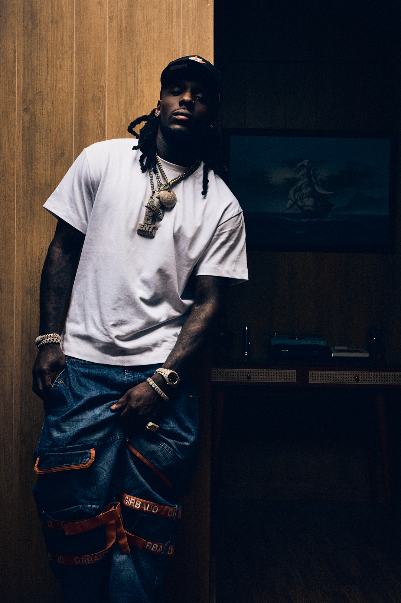
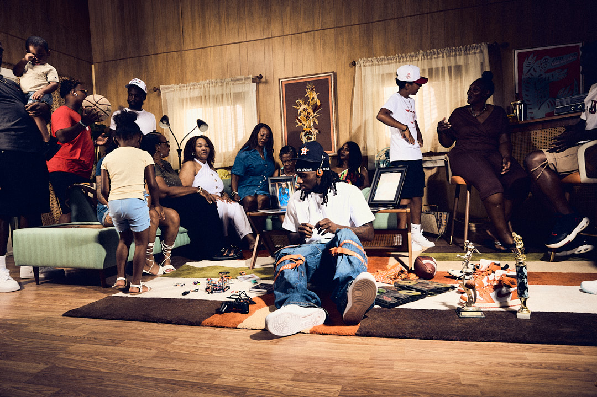
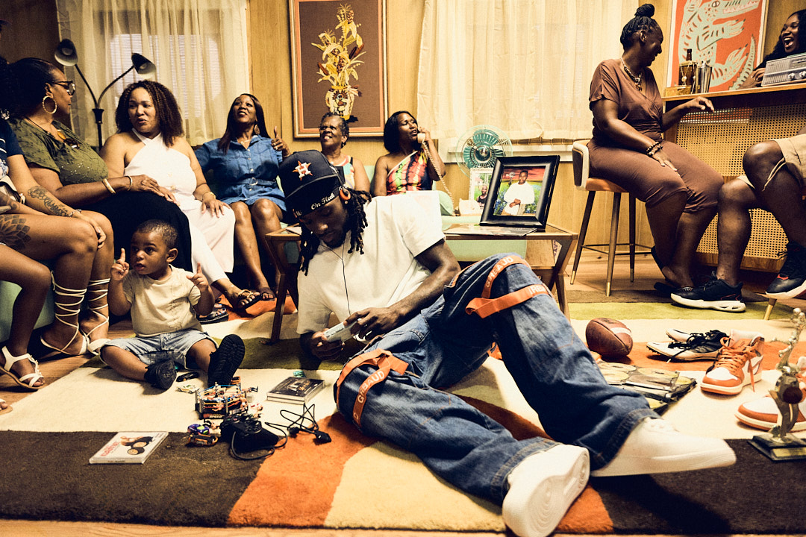
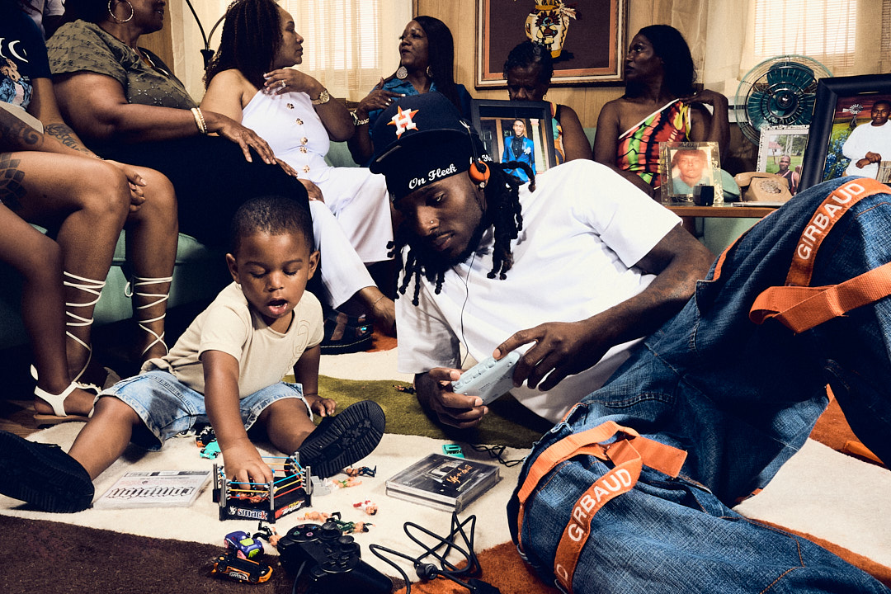
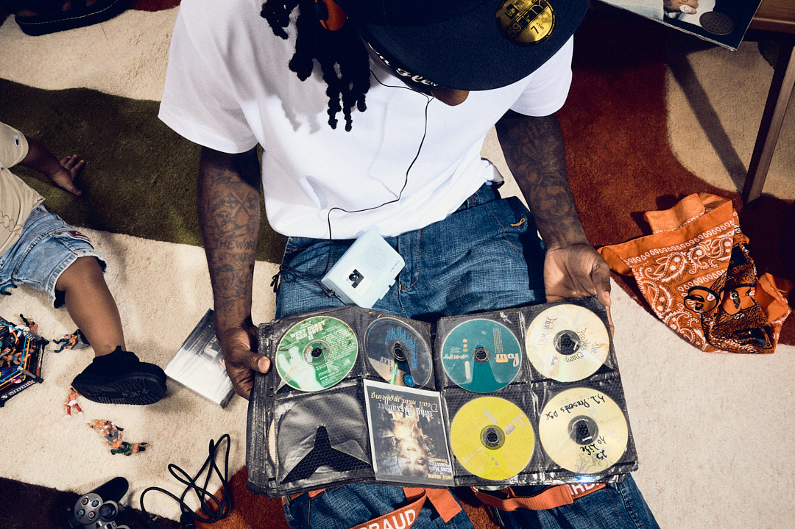
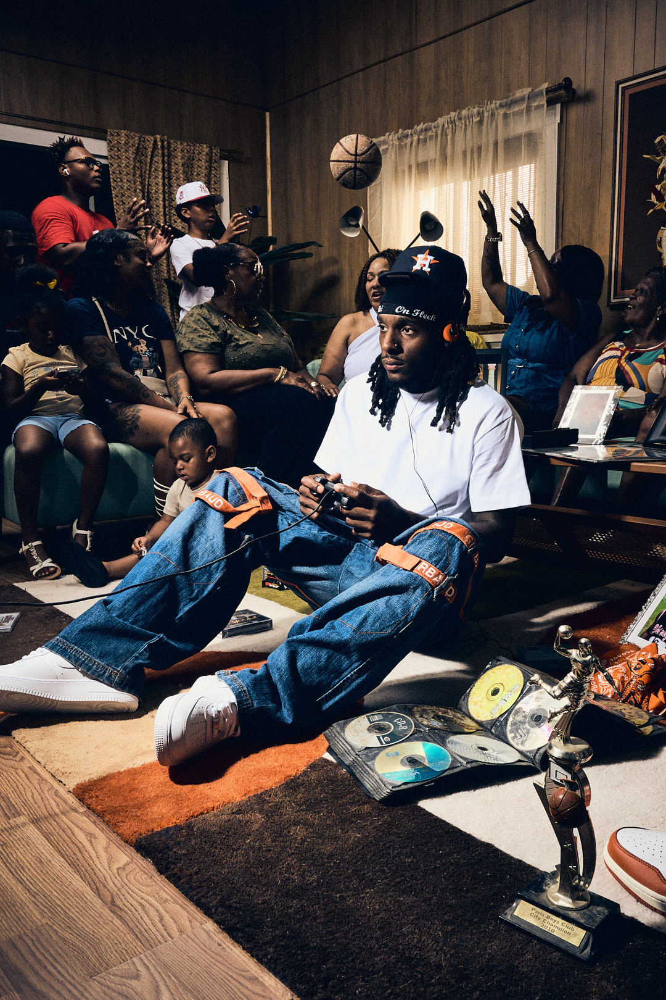
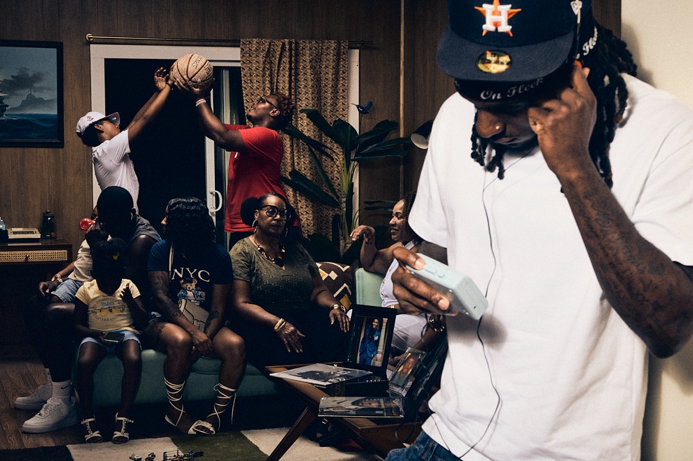
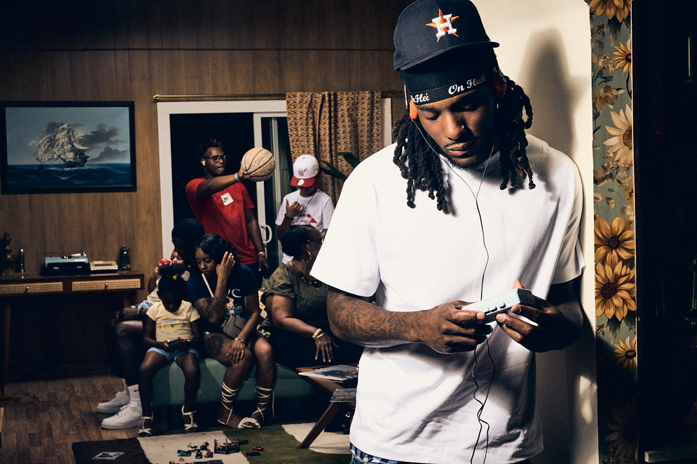
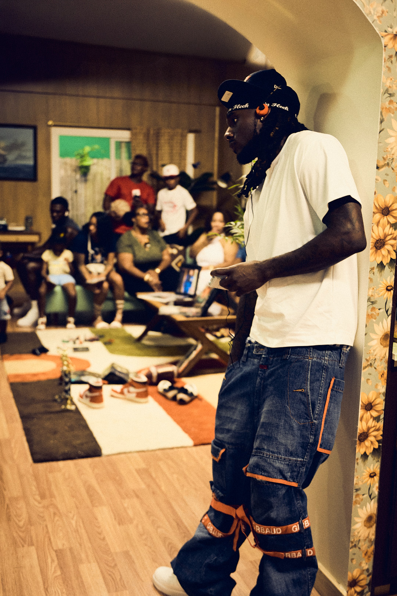
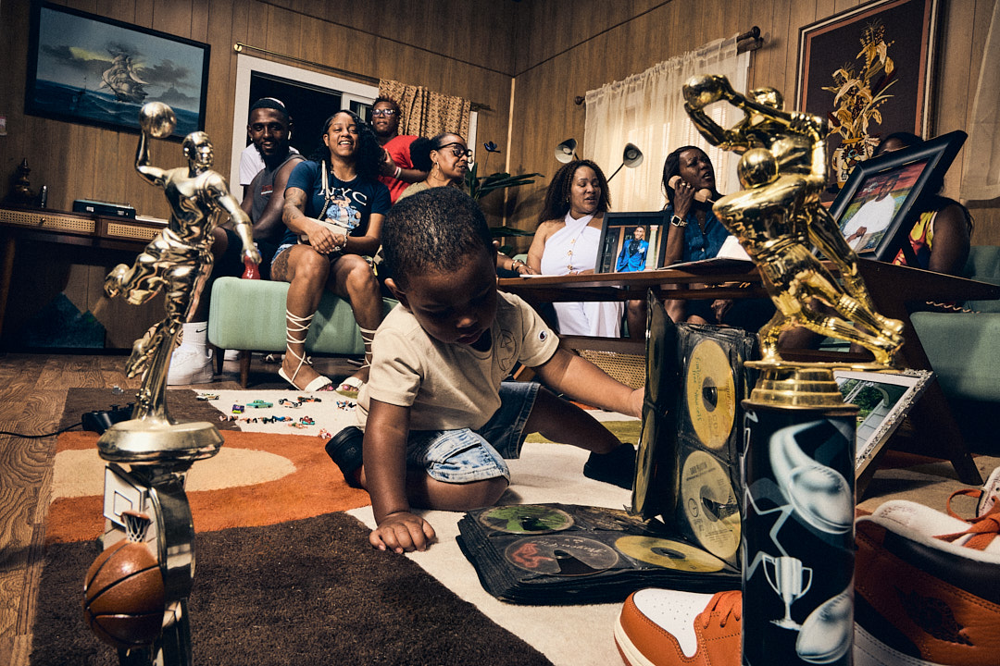
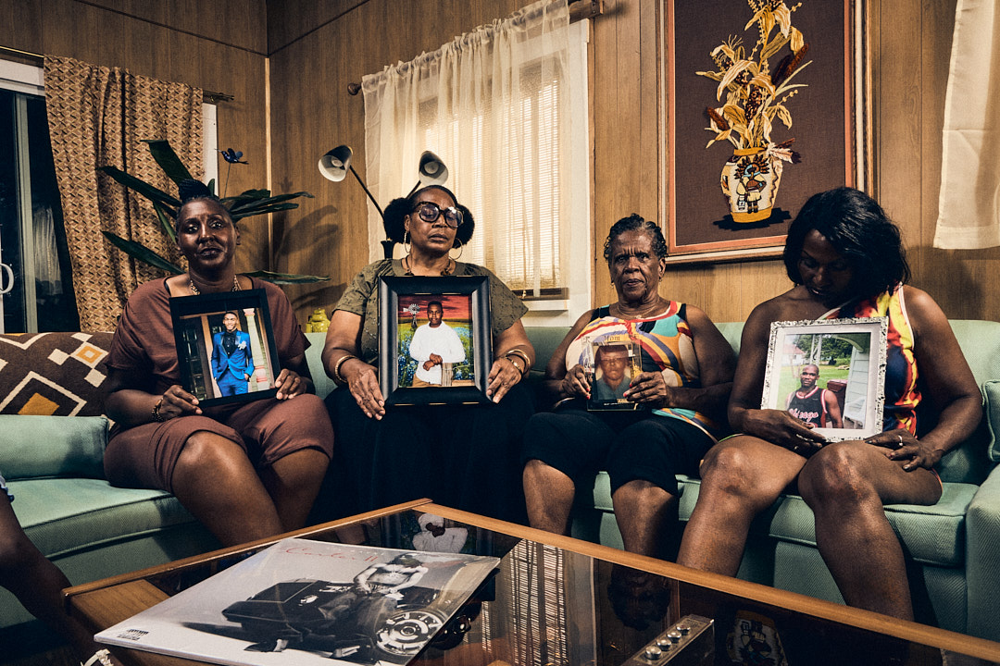
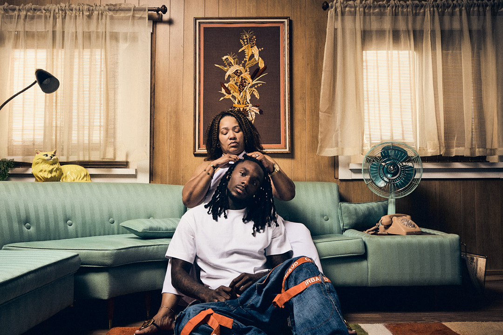
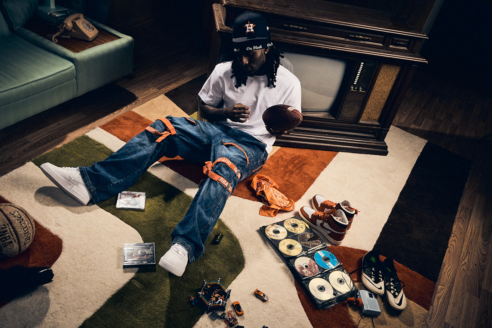
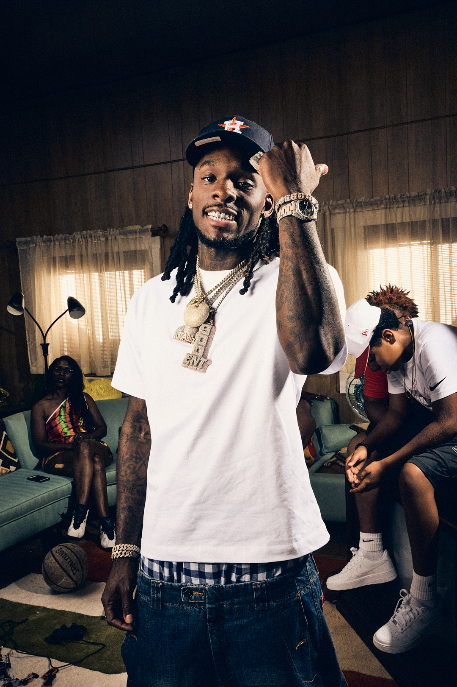
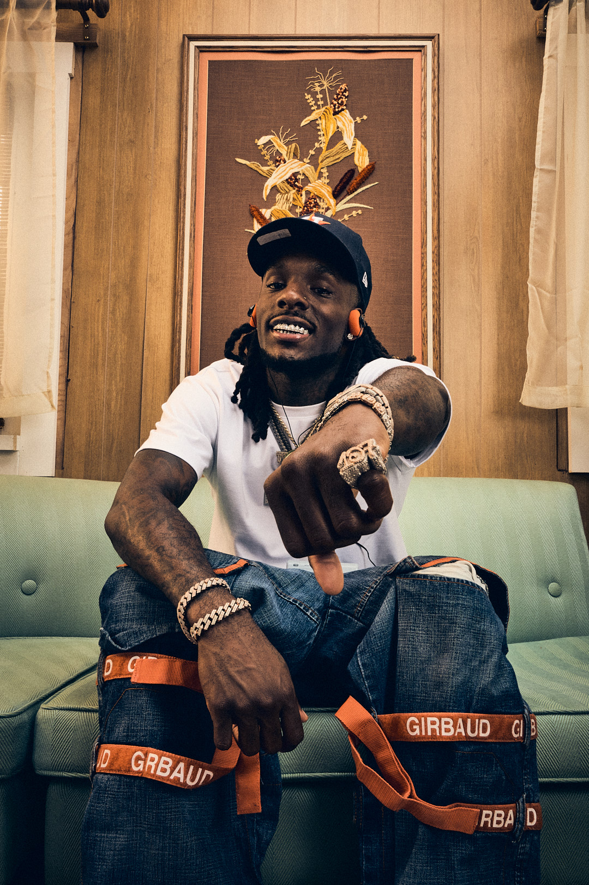